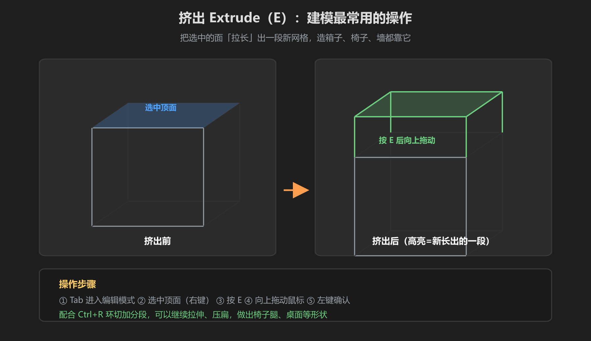
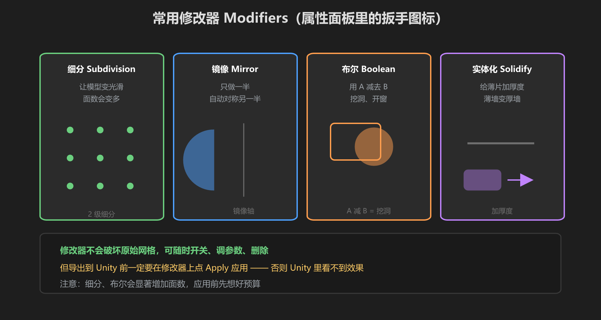

第 3 篇：基础建模操作 — 挤出、环切、修改器
会移动物体之后，真正「造形状」靠的是编辑模式里的几个神技：挤出长出形状，环切加细节，修改器批量处理。本篇最后做个箱子 → 椅子实操。
1. 编辑模式 Tab
按 Tab 进入编辑模式，此时操作的是网格本身（顶点/边/面）而不是整个物体：
- 右键 = 选择（和对象模式的左键不同，注意！）
- 顶部工具栏可切换选择方式：顶点 / 边 / 面
- 选边角模式切换快捷键：
1顶点、2边、3面（主键盘区） - 选中后同样用 G / R / S 操作，但改的是网格形状
2. 挤出 Extrude（E）—— 建模第一神技

图：选中顶面 → E → 拖动 → 箱子长高、长出手柄、长出椅子腿
- 按
Tab进编辑模式，切到面选择（3） - 右键选中一个面
- 按
E（Extrude），鼠标拖动，选中的面「长」出一段新网格 - 左键确认。想要精确高度：按
E后输入数字如0.5回车
3. 环切 Ctrl+R 与细分
- 环切 Loop Cut（Ctrl+R）：在网格上切一圈新的边线。把鼠标移到面上，出现紫线预览，滚轮可增加圈数，左键确认。椅子腿要做 4 根？先环切出 4 个区
- 细分 Subdivide：右键菜单（或
Ctrl+B区域细分）把面切成更小的面，用于增加细节密度
逻辑：挤出 = 加「长」的部分；环切 = 加「分段」；细分 = 加「密度」。VRChat 建模 90% 的场景，这三样 + 缩放开拉就够。
4. 修改器：细分 / 镜像 / 布尔

图：修改器像给网格套「滤镜」—— 细分变圆滑、镜像做对称、布尔挖洞
修改器在右侧属性面板的扳手图标里，Add Modifier 添加。本教程常用的三个：
| 修改器 | 作用 | 典型用途 |
|---|---|---|
| 细分 Subdivision Surface | 把网格变光滑、面数变多 | 圆润的枕头、坐垫；等级 2 就够 |
| 镜像 Mirror | 只做一半，自动对称出另一半 | 对称的椅子、桌子、花瓶 —— 只做半边省一半功夫 |
| 布尔 Boolean | 用 A 减去 B 或合并 | 挖洞、开窗、做镂空 |
别忘了 Apply：修改器不改变原始网格，导出到 Unity 前必须在修改器上点 Apply（Ctrl+A 也可以应用）。否则 Unity 里看到的还是没改过的模型。细分/布尔会大量增加面数，应用前先看预算（第 1 篇讲过）。
5. 实操：做一个箱子 → 一把椅子
- 箱子：默认场景自带立方体 → 进编辑模式（Tab）→ 选中顶面 →
E向上挤出 0.5 → 选中四个侧面下半部分？不用，箱子只要改尺寸：退出编辑模式，按S缩放 X 轴（S+X）拉扁 → 完成 - 椅子：新建立方体（Shift+A → Mesh → Cube）作为椅面，
S缩放成 40x4x40 扁方体 - 椅腿：切到顶视图（
7）→ 编辑模式 →Ctrl+R环切椅面加一圈线 → 面选择模式选中四角区域的面 →E向下挤出 15（输入数字）→ 四个腿就长出来了 - 椅背：选中后边的一个面 →
E向上挤出 30 → 再从顶部面向后挤出 5 - 检查：Tab 切回对象模式，
1/3/7各视图看一眼有没有穿模；按A全选后统一材质颜色
第一次做的建议：跟着做一遍别嫌丑。做坏了就 Ctrl+Z，做成了就记住这串手感。第一次完整做出椅子的成就感，比看 10 个视频都强。
学前检查清单
- 能在编辑模式和对象模式间切换（Tab）
- 会用 E 挤出、Ctrl+R 环切
- 会添加细分/镜像/布尔修改器，知道导出前要 Apply
- 独立做出了一个箱子 → 椅子的完整流程